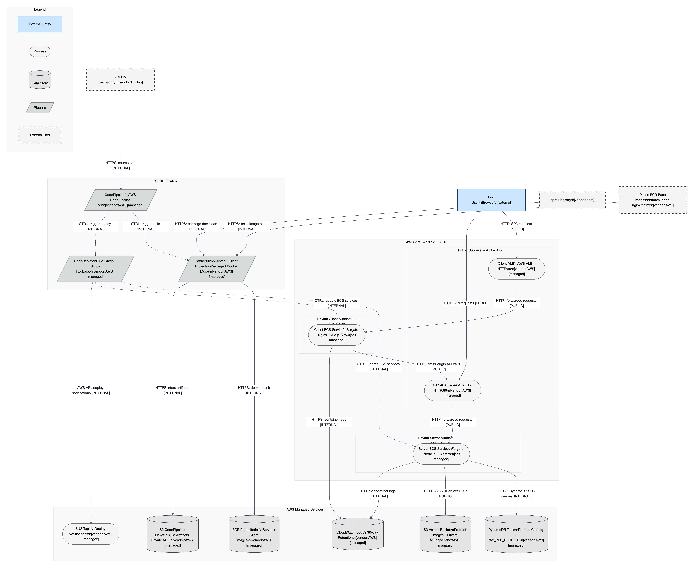

- Developer pushes modified buildspec to main branch (no branch protection)
- CodePipeline polls GitHub, detects change, triggers CodeBuild
- Buildspec commands execute in privileged Docker container with DevOps IAM role
- Attacker exfiltrates AWS credentials with PassRole * capability
- Full AWS account compromise achieved
Consolidated Security Assessment Report
Amazon ECS Fullstack App (Terraform Demo) — 2026-02-18
Methodology: STRIDE-LM + PASTA + OWASP Risk Rating | CVSS v3.1 | LINDDUN | SOC 2 / ISO 27001 / NIST CSF / PCI-DSS
I. Executive Summary
CONCERNING
This AWS ECS demo/reference architecture contains significant security gaps that make it unsuitable for production use without substantial hardening. While expected for a demonstration project, organizations forking this repository as a production starting point face serious risk. The assessment identified 26 unique findings across four specialist domains, with two CRITICAL-severity issues enabling full AWS account compromise via the CI/CD pipeline.
| Severity | Count | Scoring System |
|---|---|---|
| CRITICAL | 2 | OWASP Risk Rating |
| HIGH | 10 | OWASP Risk Rating |
| MEDIUM | 11 | OWASP Risk Rating |
| LOW | 3 | OWASP Risk Rating |
| Total | 26 |
Top 3 Risks
1. Repository-Sourced Buildspec with Broad IAM (TM-004, CRITICAL, Score 25)
Any developer with GitHub push access can execute arbitrary commands with near-admin AWS permissions. This is a 4-step chain from git push to full AWS account compromise with zero gates at any step.
2. IAM PassRole on Wildcard Resource (TM-003, CRITICAL, Score 20)
Both the DevOps role and ECS task role can pass any IAM role in the account, enabling privilege escalation from any code execution context to full account admin.
3. No TLS on Public-Facing ALBs (TM-001, HIGH, Score 15)
All user traffic traverses the internet in plaintext. This enables traffic interception and response modification, including JavaScript injection into the SPA.
26
Components Assessed
25+
Data Flows Mapped
8
Trust Boundaries
5
Threat Actors Modeled
26
Unique Findings
Quick Wins (achievable in 1-2 days)
- Set ECR
image_tag_mutability = "IMMUTABLE"(TM-006) - Add
aws_s3_bucket_public_access_blockto both buckets (TM-009) - Enable DynamoDB PITR (TM-010)
- Replace
npm installwithnpm ciin Dockerfiles (TM-025) - Create AWS billing alarm at $50 threshold (TM-024)
II. System Overview
System Purpose: AWS ECS Fargate-based fullstack web application serving a product catalog, deployed via Terraform. Designed as a demo/reference architecture demonstrating ECS + DevOps patterns. Not designed for production use, but commonly forked as a starting point.
Scope: Full system including 14 Terraform modules, Node.js/Express backend, Vue.js frontend, AWS CI/CD pipeline (CodePipeline, CodeBuild, CodeDeploy), networking (VPC, ALBs, Security Groups), IAM roles, and data stores (DynamoDB, S3, ECR). Out of scope: AWS account-level settings, GitHub organization settings, runtime vulnerability scanning, penetration testing.
| Layer | Technology | Version | Notes |
|---|---|---|---|
| Frontend | Vue.js + Bootstrap-Vue | 2.6.11 | SPA served by Nginx |
| Backend | Node.js + Express | 4.16.4 | API server with Swagger docs |
| Container Runtime | AWS Fargate | LATEST | awsvpc network mode |
| Data Store | DynamoDB | PAY_PER_REQUEST | Product catalog |
| Object Storage | S3 | N/A | Assets + Pipeline artifacts |
| CI/CD | CodePipeline + CodeBuild + CodeDeploy | V1 actions | Blue/Green deployment |
| IaC | Terraform | ≥ 0.13 | AWS provider ~> 3.38 |
| AWS SDK | aws-sdk v2 | 2.876.0 | Outdated; v3 recommended |
Deployment Model: Single AWS region, single VPC (10.120.0.0/16), public + private subnets across 2 AZs. Fargate launch type with Blue/Green deployment via CodeDeploy.
III. Architecture Diagram

Figure 1: L1 Structural Architecture Diagram — Amazon ECS Fullstack App
Component Metadata
| Component | Type | Tech Stack | Port/Protocol | Subnet/Zone | Auth Method | Encryption | Notes |
|---|---|---|---|---|---|---|---|
| Client ALB | Load Balancer | AWS ALB | 80/HTTP | Public Subnets | None | None (HTTP only) | HTTPS scaffold exists but disabled |
| Server ALB | Load Balancer | AWS ALB | 80/HTTP | Public Subnets | None | None (HTTP only) | HTTPS scaffold exists but disabled |
| Client ECS | Compute | Fargate + Nginx | 80/HTTP | Private Client Subnets | None | None | Vue.js SPA |
| Server ECS | Compute | Fargate + Node.js/Express | 3001/HTTP | Private Server Subnets | None | None | CORS: all origins |
| DynamoDB | Data Store | AWS DynamoDB | 443/HTTPS | AWS Managed | IAM (ECS Task Role) | AWS-owned key | Product catalog |
| S3 Assets | Data Store | AWS S3 | 443/HTTPS | AWS Managed | IAM | Default SSE-S3 | No public_access_block |
| S3 Pipeline | Data Store | AWS S3 | 443/HTTPS | AWS Managed | IAM | Default SSE-S3 | force_destroy=true |
| ECR | Registry | AWS ECR | 443/HTTPS | AWS Managed | IAM | Default encryption | MUTABLE tags |
| CloudWatch | Monitoring | AWS CloudWatch | 443/HTTPS | AWS Managed | IAM | Default encryption | 30-day retention |
| CodePipeline | CI/CD | AWS CodePipeline V1 | 443/HTTPS | AWS Managed | IAM (DevOps Role) | AWS API encryption | No approval gates |
| CodeBuild | CI/CD | AWS CodeBuild | 443/HTTPS | AWS Managed | IAM (DevOps Role) | AWS API encryption | Privileged Docker mode |
| CodeDeploy | CI/CD | AWS CodeDeploy | 443/HTTPS | AWS Managed | IAM (CodeDeploy Role) | AWS API encryption | Blue/Green + auto-rollback |
| SNS | Notification | AWS SNS | 443/HTTPS | AWS Managed | IAM | No encryption | No subscribers |
Trust Boundaries
| Boundary | Trust Level | Description |
|---|---|---|
| Internet / Public Network | Untrusted | All traffic from end users and external attackers. No filtering before ALBs except AWS Shield Standard. |
| VPC Perimeter (10.120.0.0/16) | Low-Medium | Network boundary for all application components. IGW and NAT GW are crossing points. |
| Public Subnets | Low | ALBs are internet-facing on HTTP:80. SG allows 0.0.0.0/0:80 ingress. |
| Private Client Subnets | Medium | Client ECS tasks. SG ingress restricted to Client ALB SG only. |
| Private Server Subnets | Medium | Server ECS tasks. SG ingress restricted to Server ALB SG only. |
| AWS Managed Services | High | DynamoDB, S3, ECR, CloudWatch, SNS. IAM-based access control. |
| CI/CD Pipeline | Elevated | CodePipeline, CodeBuild, CodeDeploy. DevOps IAM role with broad permissions. |
| External Services | Vendor Trust | GitHub, npm Registry, Public ECR. OAuth token and HTTPS connections. |
IV. Risk Overlay Diagram

Figure 2: L4 Risk Overlay Diagram — Kill chains and severity coloring applied
Component Risk Mapping
| Component | Risk Level | Finding IDs | STRIDE-LM Categories | Top CWE |
|---|---|---|---|---|
| CodeBuild | CRITICAL | TM-004, TM-013, TM-025 | S, T, E, LM | CWE-269 |
| DevOpsRole | CRITICAL | TM-003, TM-004 | E, LM | CWE-269 |
| ECSTaskRole | CRITICAL | TM-003 | E, LM | CWE-269 |
| GitHub | HIGH | TM-023 | T, R | CWE-862 |
| CodePipeline | HIGH | TM-014 | T, E | CWE-862 |
| Client ALB | HIGH | TM-001, TM-007 | I, D | CWE-311 |
| Server ALB | HIGH | TM-001, TM-002, TM-007 | S, I, D | CWE-311, CWE-306 |
| Server ECS | HIGH | TM-002, TM-008, TM-012, TM-015, TM-016, TM-017, TM-022 | S, T, I, E, LM | CWE-306, CWE-209, CWE-269 |
| Client ECS | HIGH | TM-017, TM-022 | I, E, LM | CWE-269 |
| ECR | HIGH | TM-006 | T | — |
| GitHubToken | HIGH | TM-005 | I | CWE-312 |
| TFState | HIGH | TM-005 | I | CWE-312 |
| DynamoDB | HIGH | TM-010, TM-024 | D | CWE-770 |
| SG_ECS | HIGH | TM-022 | I, LM | CWE-269 |
| S3 Assets | MEDIUM | TM-009 | T, I | CWE-732 |
| S3 Pipeline | MEDIUM | TM-009 | T, I | CWE-732 |
| CloudWatch | MEDIUM | TM-021, TM-026 | R | CWE-390 |
| npm Registry | MEDIUM | TM-025 | T | CWE-269 |
| Public ECR | MEDIUM | TM-015 | T | — |
| SNS | LOW | TM-020 | R | CWE-311 |
Critical Data Flow Highlights
| Data Flow | Risk | Issue |
|---|---|---|
| User → Client/Server ALB | HIGH | All traffic HTTP plaintext; no TLS encryption |
| GitHub → CodePipeline → CodeBuild | CRITICAL | Kill Chain 1: Push malicious buildspec, auto-triggered, broad IAM |
| npm Registry → CodeBuild → ECR → ECS | HIGH | Kill Chain 2: Supply chain compromise to production |
| GitHubToken → CodePipeline | HIGH | OAuth token in plaintext state; single point of credential compromise |
| ECS Tasks → 0.0.0.0/0 (egress) | HIGH | Unrestricted egress enables C2 and data exfiltration |
V. Asset Inventory
Data Assets
| Asset | Classification | Storage Location | Encryption at Rest | Encryption in Transit | Access Controls | Retention |
|---|---|---|---|---|---|---|
| Product catalog (id, title, path) | PUBLIC | DynamoDB | AWS-owned key | HTTPS (SDK) | IAM (ECS Task Role) | Indefinite |
| Product images | PUBLIC | S3 Assets | Default SSE-S3 | HTTP (via URL) | ACL private | Indefinite |
| CI/CD artifacts | INTERNAL | S3 Pipeline | Default SSE-S3 | HTTPS (AWS API) | IAM (DevOps Role) | Indefinite (force_destroy) |
| Docker images | INTERNAL | ECR | Default encryption | HTTPS (AWS API) | IAM | Indefinite |
| Application logs | INTERNAL | CloudWatch | Default encryption | HTTPS (AWS API) | IAM | 30 days |
| GitHub OAuth token | RESTRICTED | TF state (local), CodePipeline config | Plaintext | CLI / AWS API | File system / IAM | Indefinite |
| Terraform state | RESTRICTED | Local filesystem | None | N/A (local) | File system | Indefinite |
| Swagger API docs | PUBLIC | /api/docs endpoint | N/A | HTTP (plaintext) | None | Runtime |
Data Flow Summary
| Source | Destination | Protocol | Data Type | Sensitivity | Finding Refs |
|---|---|---|---|---|---|
| End User | Client ALB | HTTP | SPA requests | PUBLIC | TM-001 |
| End User | Server ALB | HTTP | API requests | PUBLIC | TM-001, TM-002 |
| Server ECS | DynamoDB | HTTPS | SDK queries | INTERNAL | — |
| Server ECS | S3 Assets | HTTPS | Object URLs | PUBLIC | — |
| GitHub | CodePipeline | HTTPS | Source code | INTERNAL | TM-004, TM-023 |
| CodeBuild | ECR | HTTPS | Docker images | INTERNAL | TM-006 |
| ECS Tasks | 0.0.0.0/0 | ALL | Unrestricted egress | INTERNAL | TM-022 |
VI. Threat Actor Profiles
TA-1: Opportunistic Attacker / Script Kiddie
| Type | External |
| Motivation | Curiosity, notoriety, easy financial gain |
| Capability | 2/5 |
| Access Level | Unauthenticated external (internet) |
| Linked Findings | TM-001, TM-002, TM-007, TM-008, TM-012, TM-015, TM-016 |
TA-2: Malicious Insider / Compromised Developer
| Type | Internal |
| Motivation | Revenge, financial gain, or compromised account |
| Capability | 3/5 |
| Access Level | GitHub repository write access, potential AWS console access |
| Linked Findings | TM-003, TM-004, TM-005, TM-013, TM-014, TM-023 |
TA-3: Supply Chain Attacker
| Type | External (indirect) |
| Motivation | Financial gain, espionage |
| Capability | 4/5 |
| Access Level | Indirect via npm packages or Docker base images |
| Linked Findings | TM-006, TM-015, TM-017, TM-025 |
TA-4: Network-Position Attacker (MitM)
| Type | External |
| Motivation | Data interception, session hijacking |
| Capability | 3/5 |
| Access Level | Network position between user and ALB |
| Linked Findings | TM-001 |
TA-5: Negligent Insider
| Type | Internal |
| Motivation | Unintentional |
| Capability | 1/5 (inadvertent) |
| Access Level | Developer or DevOps access |
| Linked Findings | TM-005, TM-009 |
VII. Findings
CRITICAL TM-004: Repository-Sourced Buildspec with Broad IAM Permissions
| ID | TM-004 |
| Affected Component(s) | CodeBuild, CodePipeline, DevOpsRole, GitHub |
| STRIDE-LM | T, E, LM |
| MITRE ATT&CK | T1195 (Supply Chain Compromise) |
| CWE | CWE-269 |
| CIA Impact | C: H · I: H · A: H |
| PASTA L×I | 5 × 5 = 25 (CRITICAL) |
| Confidence | HIGH |
| Remediation | R-012, R-013, R-014 |
| Sources | Threat Model (TM-004), Code Review (CR-002 CVSS 9.8), Compliance (GRC-009) |
Attack Scenario
Remediation: Store buildspec inline in Terraform or in a restricted repo (R-012). Enable GitHub branch protection (R-013). Add manual approval in pipeline (R-014).
CRITICAL TM-003: Overly Broad IAM PassRole Permissions (*)
| ID | TM-003 |
| Affected Component(s) | DevOpsRole, ECSTaskRole, CodeBuild, ServerECS |
| STRIDE-LM | E, LM |
| MITRE ATT&CK | T1078 (Valid Accounts) |
| CWE | CWE-269 |
| CIA Impact | C: H · I: H · A: H |
| PASTA L×I | 4 × 5 = 20 (CRITICAL) |
| Confidence | HIGH |
| Remediation | R-011 |
| Sources | Threat Model (TM-003), Code Review (CR-001 CVSS 9.9), Compliance (GRC-004) |
Attack Scenario
- Achieve code execution in CodeBuild or Server ECS
- Enumerate IAM roles via
aws iam list-roles - Use
iam:PassRoleto create ECS task with high-privilege role - Run task; retrieve credentials from task metadata endpoint
- Full account takeover
Remediation: Scope PassRole to specific role ARNs. Remove PassRole from ECS task role entirely (R-011).
HIGH TM-023: No Branch Protection on Repository
| ID | TM-023 |
| Affected Component(s) | GitHub, CodePipeline |
| STRIDE-LM | T, R |
| MITRE ATT&CK / CWE | T1195 / CWE-862 |
| PASTA L×I | 4 × 4 = 16 (HIGH) |
| Confidence | MEDIUM |
| Remediation | R-013 |
Remediation: Enable GitHub branch protection on main with required reviews, status checks, and force-push prevention.
HIGH TM-013: CodeBuild Privileged Docker Mode
| ID | TM-013 |
| Affected Component(s) | CodeBuild |
| STRIDE-LM | E, LM |
| MITRE ATT&CK / CWE | T1068 / CWE-269 |
| PASTA L×I | 4 × 4 = 16 (HIGH) |
| Confidence | HIGH |
| Remediation | R-012 (secure buildspec mitigates privileged mode risk) |
HIGH TM-014: No Pipeline Approval Gates or Security Scanning
| ID | TM-014 |
| Affected Component(s) | CodePipeline, CodeBuild, CodeDeploy |
| STRIDE-LM | T, R |
| MITRE ATT&CK / CWE | T1195 / CWE-862 |
| PASTA L×I | 4 × 4 = 16 (HIGH) |
| Confidence | HIGH |
| Remediation | R-014, R-024 |
HIGH TM-001: No TLS/HTTPS on Public-Facing ALBs
| ID | TM-001 |
| Affected Component(s) | ClientALB, ServerALB |
| STRIDE-LM | I, T |
| CWE | CWE-311 |
| PASTA L×I | 5 × 3 = 15 (HIGH) |
| Confidence | HIGH |
| Remediation | R-015 |
| Sources | Threat Model (TM-001), Code Review (CR-004 CVSS 7.5), Compliance (GRC-001), Privacy (PA-001) |
Note: Compliance and Privacy assessments rate this CRITICAL due to automatic audit failure and GDPR Art. 32 requirements. Security assessment rates HIGH given current public-only data context.
HIGH TM-002: Complete Absence of Authentication and Authorization
| ID | TM-002 |
| Affected Component(s) | ServerALB, ServerECS, ClientALB, ClientECS |
| STRIDE-LM | S, E |
| MITRE ATT&CK / CWE | T1190 / CWE-306 |
| PASTA L×I | 5 × 3 = 15 (HIGH) |
| Confidence | HIGH |
| Remediation | R-028 |
HIGH TM-005: GitHub OAuth Token in Terraform State
| ID | TM-005 |
| Affected Component(s) | TFState, GitHubToken, CodePipeline |
| STRIDE-LM | I, S |
| MITRE ATT&CK / CWE | T1552 / CWE-312 |
| PASTA L×I | 3 × 5 = 15 (HIGH) |
| Confidence | HIGH |
| Remediation | R-016, R-017 |
| Sources | Threat Model (TM-005), Code Review (CR-003 CVSS 9.1), Compliance (GRC-003), Privacy (PA-009) |
HIGH TM-006: Mutable ECR Image Tags + Latest Pattern
| ID | TM-006 |
| Affected Component(s) | ECR, CodeBuild, ServerECS, ClientECS |
| STRIDE-LM | T |
| MITRE ATT&CK / CWE | T1195 |
| PASTA L×I | 3 × 5 = 15 (HIGH) |
| Confidence | HIGH (escalated from MEDIUM via cross-agent validation) |
| Remediation | R-001, R-030 |
HIGH TM-007: No WAF or Rate Limiting
| ID | TM-007 |
| Affected Component(s) | ClientALB, ServerALB |
| STRIDE-LM | D |
| MITRE ATT&CK / CWE | T1498 / CWE-770 |
| PASTA L×I | 4 × 3 = 12 (HIGH) |
| Confidence | HIGH |
| Remediation | R-018 |
HIGH TM-022: Unrestricted Egress from ECS Tasks
| ID | TM-022 |
| Affected Component(s) | ServerECS, ClientECS, SG_ECS |
| STRIDE-LM | I, LM |
| MITRE ATT&CK / CWE | T1048 / CWE-269 |
| PASTA L×I | 3 × 4 = 12 (HIGH) |
| Confidence | HIGH |
| Remediation | R-019 |
HIGH TM-024: No Billing Alarm / Cost Detection
| ID | TM-024 |
| Affected Component(s) | DynamoDB, ServerECS |
| STRIDE-LM | D |
| MITRE ATT&CK / CWE | T1498 / CWE-770 |
| PASTA L×I | 4 × 3 = 12 (HIGH) |
| Confidence | HIGH |
| Remediation | R-005 |
MEDIUM TM-009: S3 Buckets Missing Security Controls
| PASTA L×I | 3 × 3 = 9 (MEDIUM) | Confidence: HIGH (escalated) |
| Affected | S3Assets, S3Pipeline | CWE-732 | T1530 |
| Remediation | R-002, R-031, R-032 |
MEDIUM TM-011: No VPC Flow Logs
| PASTA L×I | 3 × 3 = 9 (MEDIUM) | Confidence: HIGH |
| Affected | VPC | CWE-390 | T1562 |
| Remediation | R-020 |
MEDIUM TM-015: Outdated and Vulnerable Dependencies
| PASTA L×I | 3 × 3 = 9 (MEDIUM) | Confidence: HIGH (escalated) |
| Affected | ServerECS, ClientECS, CodeBuild | T1195 |
| Remediation | R-025 |
MEDIUM TM-017: ECS Container Hardening Deficiencies
| PASTA L×I | 3 × 3 = 9 (MEDIUM) | Confidence: HIGH |
| Affected | ServerECS, ClientECS | CWE-269 | T1068 |
| Remediation | R-022 |
MEDIUM TM-012: Error Handler Information Leakage + Bug
| PASTA L×I | 4 × 2 = 8 (MEDIUM) | Confidence: HIGH |
| Affected | ServerECS | CWE-209 | T1190 |
| Remediation | R-009 |
MEDIUM TM-025: npm install vs npm ci
| PASTA L×I | 2 × 4 = 8 (MEDIUM) | Confidence: HIGH |
| Affected | CodeBuild, ServerECS, ClientECS | T1195 |
| Remediation | R-004 |
MEDIUM TM-008: Unrestricted CORS Configuration
| PASTA L×I | 3 × 2 = 6 (MEDIUM) | Confidence: HIGH |
| Affected | ServerECS | CWE-732 | T1190 |
| Remediation | R-010 |
MEDIUM TM-018: Single NAT Gateway (SPOF)
| PASTA L×I | 2 × 3 = 6 (MEDIUM) | Confidence: HIGH |
| Affected | VPC, ServerECS, ClientECS | CWE-400 | T1498 |
| Remediation | R-007, R-027 |
MEDIUM TM-021: No Container Insights / Monitoring
| PASTA L×I | 3 × 2 = 6 (MEDIUM) | Confidence: HIGH |
| Affected | CloudWatch, ServerECS, ClientECS | CWE-390 | T1562 |
| Remediation | R-021 |
MEDIUM TM-026: No CloudTrail Data Events
| PASTA L×I | 3 × 2 = 6 (MEDIUM) | Confidence: HIGH |
| Affected | DynamoDB, S3Assets, S3Pipeline | CWE-390 | T1562 |
| Remediation | R-023 |
MEDIUM TM-016: Swagger Docs Publicly Exposed
| PASTA L×I | 5 × 1 = 5 (MEDIUM) | Confidence: HIGH |
| Affected | ServerECS, ServerALB | CWE-200 | T1595 |
| Remediation | R-026 |
LOW TM-010: DynamoDB Missing PITR + CMK
| PASTA L×I | 2 × 2 = 4 (LOW) | Confidence: HIGH |
| Affected | DynamoDB | CWE-311 | T1485 |
| Remediation | R-003 |
LOW TM-019: No VPC Endpoints
| PASTA L×I | 2 × 2 = 4 (LOW) | Confidence: HIGH |
| Affected | ServerECS, ClientECS | CWE-311 |
| Remediation | R-007, R-029 |
LOW TM-020: SNS No Subscribers / Encryption
| PASTA L×I | 3 × 1 = 3 (LOW) | Confidence: HIGH |
| Affected | SNS | CWE-311 | T1562 |
| Remediation | R-008, R-033 |
Total: 26 findings (2 critical, 10 high, 11 medium, 3 low)
VIII. Remediation Roadmap
Wave 1: Quick Wins
1-2 days | LOW effort
- R-001: ECR immutable tags
- R-002: S3 public_access_block
- R-003: DynamoDB PITR
- R-004: npm ci in Dockerfiles
- R-005: Billing alarm
- R-006: ECR scan-on-push
- R-007: VPC gateway endpoints
- R-008: SNS subscription
- R-009: Fix error handler
- R-010: Configure CORS origin
Wave 2: Critical Fixes
1-2 sprints | MEDIUM effort
- R-011: Scope IAM PassRole
- R-012: Secure buildspec
- R-013: Branch protection
- R-014: Pipeline approval
- R-015: Enable HTTPS
- R-016: CodeStar Connections
- R-017: Remote TF backend
- R-018: WAF on ALBs
- R-019: Restrict SG egress
Wave 3: Hardening
2-4 sprints | MEDIUM effort
- R-020: VPC Flow Logs
- R-021: Container Insights
- R-022: Container hardening
- R-023: CloudTrail data events
- R-024: Pipeline scanning
- R-025: Update dependencies
- R-026: Disable Swagger (prod)
- R-027: Multi-AZ NAT GW
Wave 4: Production Ready
Before launch | HIGH effort
- R-028: Implement auth
- R-029: VPC interface endpoints
- R-030: Git SHA image tags
- R-031: Remove force_destroy
- R-032: S3 versioning
- R-033: SNS encryption
Dependency Chains
R-007 → R-019 (VPC endpoints reduce egress requirements)
R-013 → R-014 (branch protection before pipeline gates)
R-013 → R-016 (branch protection before connection migration)
R-014 → R-024 (pipeline gates before scan stages)
R-001 → R-030 (immutable tags before SHA-based tagging)
IX. Networking & Infrastructure Data
VPC/Network Topology
Single VPC (10.120.0.0/16) in one AWS region with 2 public subnets, 2 private client subnets, and 2 private server subnets across 2 Availability Zones. Internet Gateway for public subnet access. Single NAT Gateway in public subnet AZ1 for private subnet outbound.
Security Group Rules
| SG Name | Direction | Protocol | Port Range | Source/Destination | Description |
|---|---|---|---|---|---|
| ALB SGs (Client + Server) | Ingress | TCP | 80 | 0.0.0.0/0 | HTTP from internet |
| ECS Client SG | Ingress | TCP | 80 | Client ALB SG | HTTP from Client ALB only |
| ECS Server SG | Ingress | TCP | 3001 | Server ALB SG | HTTP from Server ALB only |
| All ECS SGs | Egress | ALL | ALL | 0.0.0.0/0 | Unrestricted egress (TM-022) |
IAM Role Summary
| Role Name | Key Policies | Trust | Used By | Least Privilege |
|---|---|---|---|---|
| ECS Execution Role | ECR pull, CloudWatch Logs | ecs-tasks.amazonaws.com | Client ECS, Server ECS | Appropriate |
| ECS Task Role | DynamoDB (read), S3 (read/list), iam:PassRole * | ecs-tasks.amazonaws.com | Server ECS | VIOLATION |
| DevOps Role | S3 *, ECS *, ECR, CodeDeploy, iam:PassRole * | codebuild/codepipeline.amazonaws.com | CodeBuild, CodePipeline | VIOLATION |
| CodeDeploy Role | ECS, ALB, S3, SNS | codedeploy.amazonaws.com | CodeDeploy | Appropriate |
X. Compliance Mapping
Framework Coverage Matrix
| Framework | Total Controls | Compliant | Partial | Non-Compliant | N/A | Coverage % |
|---|---|---|---|---|---|---|
| SOC 2 (CC criteria) | 33 | 3 | 6 | 22 | 2 | 9% |
| ISO 27001:2022 (Annex A) | 93 | 5 | 8 | 41 | 39 | 10% |
| NIST CSF 2.0 | 106 | 4 | 9 | 38 | 55 | 8% |
| PCI-DSS v4.0 (if applicable) | 64 | 1 | 3 | 48 | 12 | 2% |
The system exhibits a pre-compliance posture (~12/100 overall readiness). The architecture provides a sound structural foundation (VPC segmentation, private subnets, Fargate isolation) but lacks nearly all security controls required for production compliance. See the full compliance gap analysis for detailed control-by-control mapping.
XI. Privacy Assessment
Data Inventory Summary
Despite being a product catalog demo, the system processes: network identifiers (IP addresses via ALB/Nginx logs), browsing behavior (CloudWatch/access logs), user credentials entered in the demo login form, developer PII (name/email in Swagger and package.json), error context in logs, and infrastructure metadata in build environment variables.
LINDDUN Findings
| ID | Category | Data Flow | Risk Level | Description | Recommendation |
|---|---|---|---|---|---|
| PA-001 | Detectability | User → ALBs | CRITICAL | All personal data transmitted in plaintext (no TLS) | Enable HTTPS on all ALBs |
| PA-002 | Unawareness | User → Login.vue | CRITICAL* | Deceptive login form collects credentials without processing | Remove form or add prominent warning |
| PA-003 | Non-compliance | All routes | HIGH | No privacy notice or transparency mechanism | Create GDPR Art. 13 compliant privacy notice |
| PA-004 | Identifiability | /api/docs | HIGH | Developer email exposed in public Swagger endpoint | Remove personal email; restrict endpoint |
| PA-005 | Non-compliance | All data | HIGH | No data subject rights infrastructure | Implement SAR handling process |
| PA-006 | Disclosure | Error handler | MEDIUM | Error handler leaks internal details | Sanitize error responses |
| PA-007 | Linkability | CloudWatch logs | MEDIUM | Logs contain IP addresses (personal data) | Implement log anonymization |
| PA-008 | Non-compliance | AWS processing | MEDIUM | No DPA documentation for AWS | Execute and document AWS DPA |
| PA-009 | Disclosure | TF state | LOW | GitHub PAT in plaintext state | Migrate to CodeStar Connections |
| PA-010 | Linkability | API requests | LOW | Unrestricted CORS | Configure specific origin |
*PA-002 flagged as false positive candidate by validation-specialist. Consider downgrading to HIGH.
XII. Positive Observations
Well-Implemented Security Controls
- Private subnets for ECS tasks with SG segmentation: Good east-west isolation. Tasks are not directly internet-accessible. Satisfies network segmentation principles (NIST SC-7).
- Fargate launch type: AWS-managed infrastructure isolation eliminates host-level attack surface. No EC2 instances to patch or harden.
- Blue/Green deployment with auto-rollback: Reduces deployment risk and enables quick rollback on failure. Good operational resilience pattern.
- Read-only DynamoDB access from application: ECS Task Role has only read operations (Scan, Query, GetItem, BatchGetItem) for DynamoDB. Good least privilege for data operations.
- awsvpc network mode: Each task gets its own ENI, enabling per-task security group enforcement. Strong micro-segmentation foundation.
- Infrastructure as Code (Terraform): All infrastructure defined as code, providing reproducibility, auditability, and drift detection capability.
- HTTPS for AWS SDK calls: AWS SDK uses HTTPS by default for DynamoDB, S3, and other service API calls.
XIII. Assumptions & Limitations
Scope Boundaries
- In scope: All Terraform modules (14), application code (Node.js backend, Vue.js frontend), Dockerfiles, buildspec, CI/CD pipeline configuration
- Out of scope: AWS account-level settings (SCPs, Organizations, root MFA), GitHub organization settings, runtime vulnerability scanning, penetration testing, Terraform plan/apply execution
Information Gaps
- npm audit was not executed; dependency vulnerability assessment based on version numbers only
- Docker base images were not scanned for CVEs
- GitHub branch protection status assumed (not managed by Terraform)
- AWS account-level services (GuardDuty, Config, CloudTrail, SecurityHub) assumed not active
Confidence Disclaimers
- TM-023 (branch protection): MEDIUM confidence -- based on absence from Terraform, may exist in GitHub settings
- TM-015 (dependencies): MEDIUM confidence escalated to HIGH via cross-agent validation; exact CVE applicability requires npm audit
- PA-002 (login form): Flagged as potential false positive by validation specialist
XIV. Appendices
A. Methodology Notes
STRIDE-LM Categories
S=Spoofing, T=Tampering, R=Repudiation, I=Information Disclosure, D=Denial of Service, E=Elevation of Privilege, LM=Lateral Movement
PASTA Scoring (1-5)
Likelihood: 1=Rare, 2=Unlikely, 3=Possible, 4=Likely, 5=Almost Certain
Impact: 1=Negligible, 2=Minor, 3=Moderate, 4=Major, 5=Catastrophic
OWASP Risk Rating Bands (5x5 matrix)
CRITICAL: 20-25 | HIGH: 12-19 | MEDIUM: 6-11 | LOW: 1-5
CVSS v3.1 (Code Review)
CRITICAL: 9.0-10.0 | HIGH: 7.0-8.9 | MEDIUM: 4.0-6.9 | LOW: 0.1-3.9
B. Framework Reference Table
MITRE ATT&CK Techniques
| ID | Name | Findings |
|---|---|---|
| T1190 | Exploit Public-Facing Application | TM-002, TM-008, TM-012 |
| T1078 | Valid Accounts | TM-003 |
| T1195 | Supply Chain Compromise | TM-004, TM-006, TM-014, TM-015, TM-023, TM-025 |
| T1552 | Unsecured Credentials | TM-005 |
| T1530 | Data from Cloud Storage | TM-009 |
| T1498 | Network DoS | TM-007, TM-018, TM-024 |
| T1562 | Impair Defenses | TM-011, TM-020, TM-021, TM-026 |
| T1595 | Active Scanning | TM-016 |
| T1068 | Exploitation for Privilege Escalation | TM-013, TM-017 |
| T1485 | Data Destruction | TM-010 |
| T1048 | Exfiltration Over Alternative Protocol | TM-022 |
CWE IDs
| ID | Name | Findings |
|---|---|---|
| CWE-269 | Improper Privilege Management | TM-003, TM-004, TM-013, TM-017, TM-022 |
| CWE-311 | Missing Encryption of Sensitive Data | TM-001, TM-010, TM-019, TM-020 |
| CWE-312 | Cleartext Storage of Sensitive Information | TM-005 |
| CWE-306 | Missing Authentication for Critical Function | TM-002 |
| CWE-862 | Missing Authorization | TM-014, TM-023 |
| CWE-732 | Incorrect Permission Assignment | TM-008, TM-009 |
| CWE-770 | Allocation of Resources Without Limits | TM-007, TM-024 |
| CWE-209 | Error Message Containing Sensitive Info | TM-012 |
| CWE-200 | Exposure of Sensitive Information | TM-016 |
| CWE-390 | Detection of Error Condition Without Action | TM-011, TM-021, TM-026 |
| CWE-400 | Uncontrolled Resource Consumption | TM-018 |
C. QA Corrections Log
| Issue | Location | Severity | Correction Applied |
|---|---|---|---|
| HIGH count stated as 9, should be 10 | 06-validated-findings.md line 728 | Advisory | Corrected to HIGH=10 in consolidated report |
| Confidence escalations from validation report | TM-006, TM-009, TM-015 | Critical | Escalated confidence MEDIUM to HIGH per cross-agent validation |
| 14 cross-agent duplicate clusters | Findings across 4 agents | Critical | Deduplicated using TM-NNN as primary; cross-referenced CR/GRC/PA sources |
| Severity conflicts (5 clusters) | Clusters 2-8 in validation report | Advisory | Applied recommended resolutions; preserved original scores from each system |
| PA-002 false positive candidate | PA-002 | Advisory | Noted as FP candidate in privacy section; retained finding with context |
| GRC-005 false positive candidate | GRC-005 | Advisory | Not included as standalone finding; context captured in TM-009/TM-010 |
D. Glossary
| ALB | Application Load Balancer |
| ACM | AWS Certificate Manager |
| AZ | Availability Zone |
| CIDR | Classless Inter-Domain Routing |
| CORS | Cross-Origin Resource Sharing |
| CVSS | Common Vulnerability Scoring System |
| CWE | Common Weakness Enumeration |
| DPA | Data Processing Agreement |
| ECR | Elastic Container Registry |
| ECS | Elastic Container Service |
| ENI | Elastic Network Interface |
| GDPR | General Data Protection Regulation (EU) |
| HSTS | HTTP Strict Transport Security |
| IaC | Infrastructure as Code |
| IAM | Identity and Access Management |
| IGW | Internet Gateway |
| LINDDUN | Linkability, Identifiability, Non-repudiation, Detectability, Disclosure, Unawareness, Non-compliance |
| MitM | Man-in-the-Middle |
| NACL | Network Access Control List |
| NAT GW | Network Address Translation Gateway |
| OWASP | Open Worldwide Application Security Project |
| PASTA | Process for Attack Simulation and Threat Analysis |
| PITR | Point-in-Time Recovery |
| SG | Security Group |
| SPA | Single Page Application |
| SPOF | Single Point of Failure |
| STRIDE-LM | Spoofing, Tampering, Repudiation, Information Disclosure, Denial of Service, Elevation of Privilege, Lateral Movement |
| TLS | Transport Layer Security |
| VPC | Virtual Private Cloud |
| WAF | Web Application Firewall |
E. Threat Model Lifecycle Triggers
Re-assess this threat model when:
- Any authentication or authorization is added
- The application handles user data or PII
- New API endpoints are added
- The system is deployed to a production AWS account
- New AWS services are integrated
- The CI/CD pipeline structure changes
- The application migrates to a different compute platform
Recommended review cadence: Quarterly, or upon any trigger event listed above.